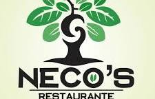
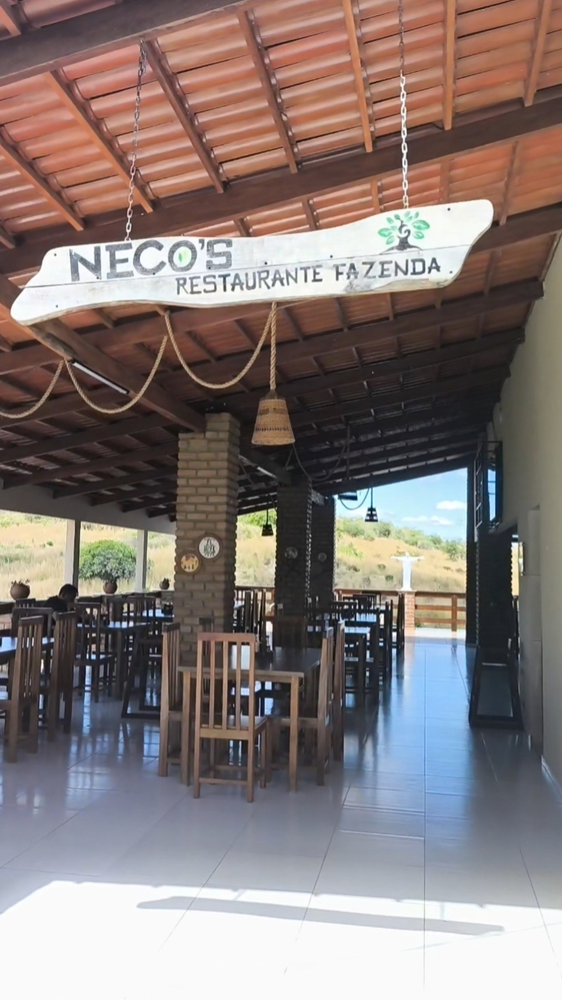
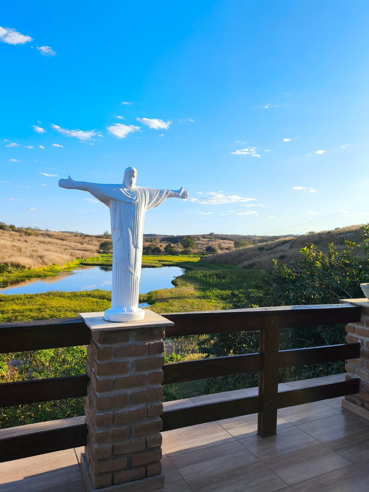
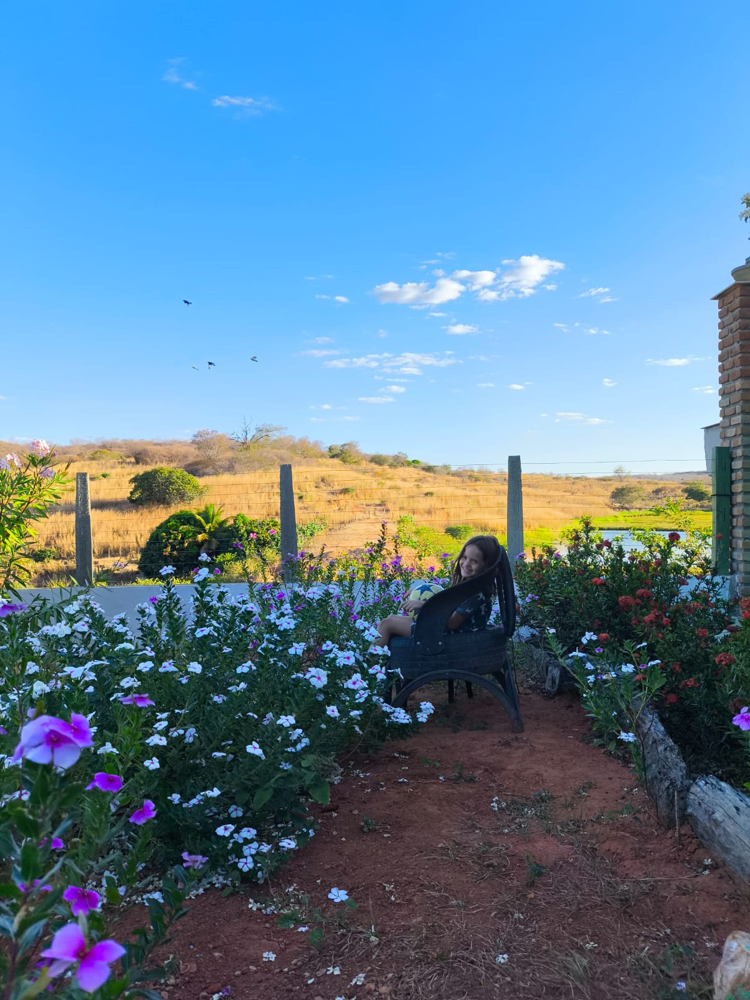
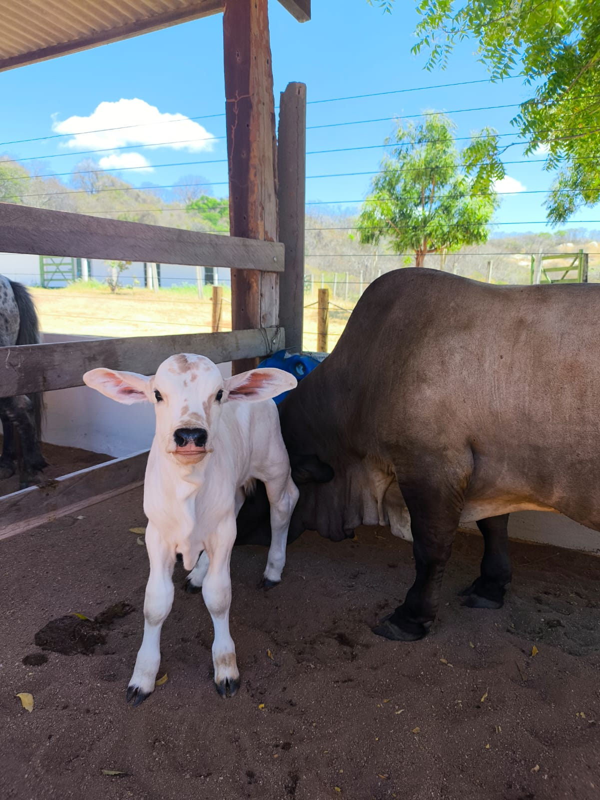

Venha conhecer o Neco's Restaurante Fazenda. Um ambiente agradável, contato com a natureza e uma experiência de gastronomia regional.
Conheça nosso cardápio
O Neco's Restaurante Fazenda oferece um ambiente acolhedor, cercado pela beleza da natureza e pelo clima tranquilo do campo.
Um lugar para reunir a família, encontrar os amigos e aproveitar bons momentos acompanhado de uma boa refeição.
Como chegarSabores tradicionais e pratos preparados para proporcionar uma boa experiência.
Um ambiente rural com paisagens naturais e tranquilidade.
Um espaço para aproveitar bons momentos com pessoas especiais.
Confira algumas das opções disponíveis no Neco's Restaurante Fazenda.
Consulte o restaurante para confirmar a disponibilidade e os preços atualizados.
Veja um pouco da estrutura, das paisagens e dos animais do nosso espaço.



Confira vídeos mostrando o ambiente e a experiência da fazenda.
Estamos esperando por você no Neco's Restaurante Fazenda, em Serra Grande, Paraíba.